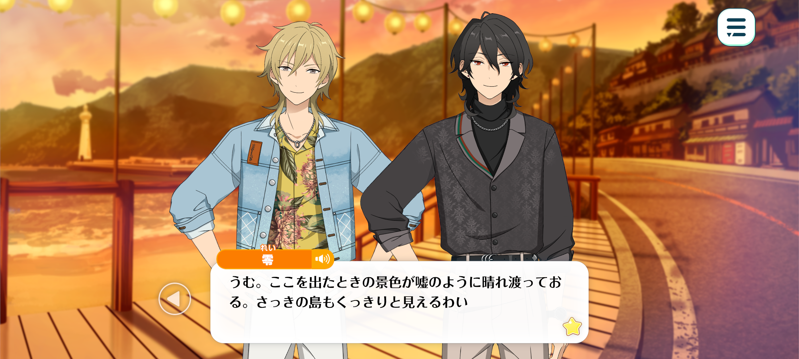
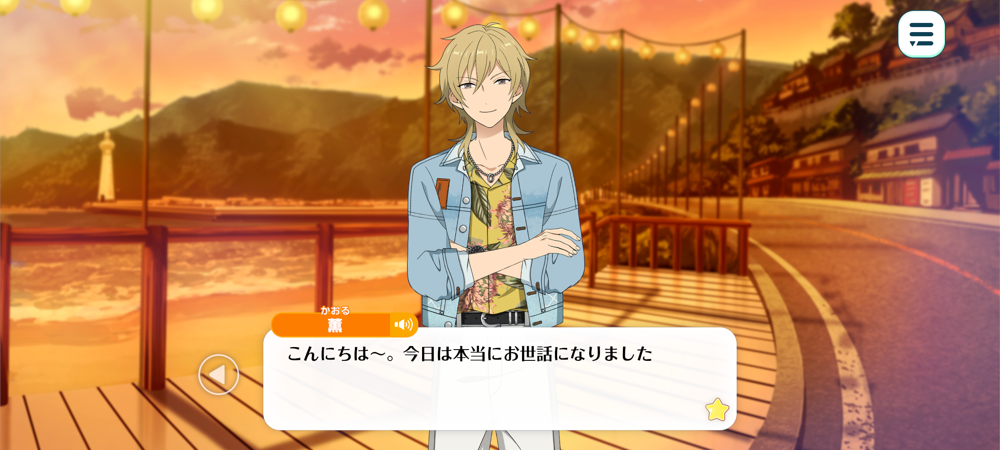
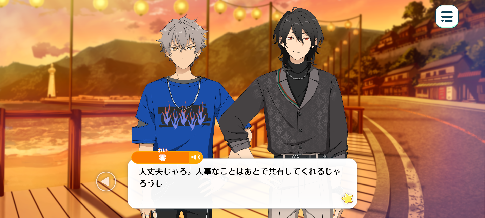
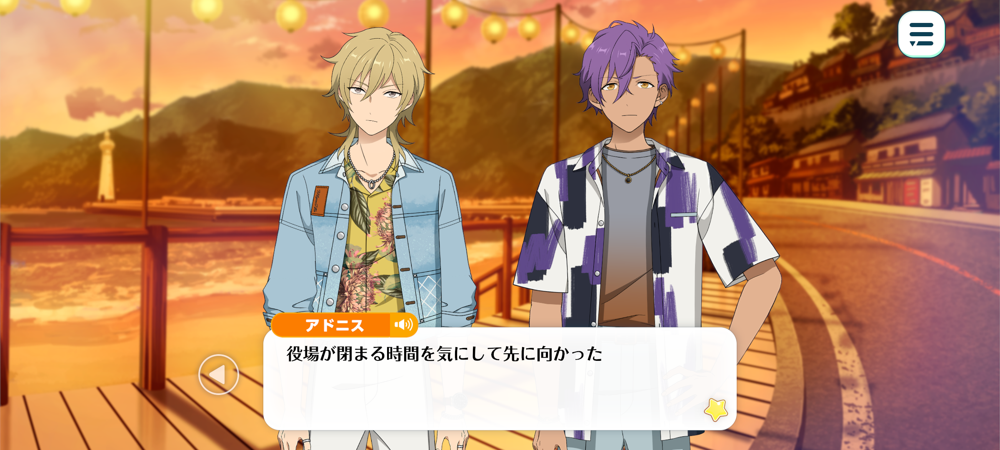
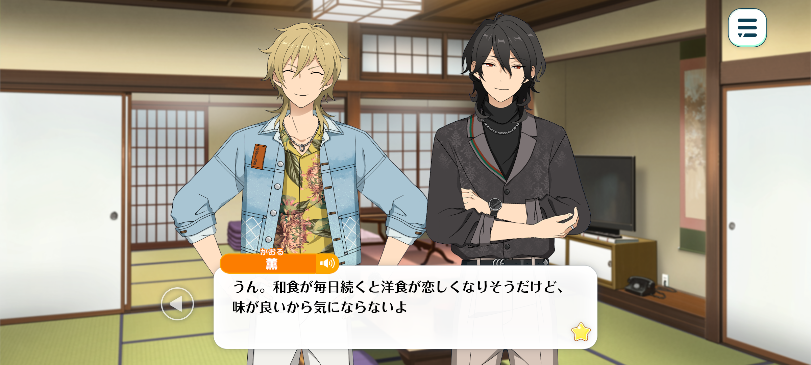
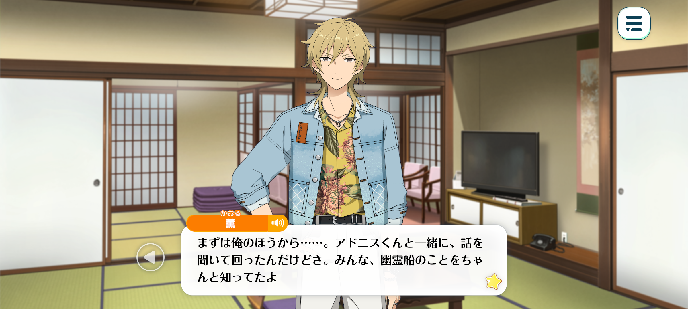

Velvet Ship
Haul Home The Sheets / Chapter 2



Kaoru: Fwah... I’m glad we made it back safely.
Rei: Quite. The weather we sailed through on our way here feels almost like a distant dream, given how clear the skies are now. We can even see the island quite clearly from here.
Adonis: I agree. It’s almost as though the past few days of bad weather never happened.
Koga: Right? It was so cloudy, you couldn’t even see the sun.
...Think it had somethin’ to do with that ghost ship?
Adonis: Perhaps. Once the ship disappeared, so did the fog.
I hope the weather stays this way for our live. Though, if it’s misty, perhaps it wouldn’t be so bad if the ghost ship appeared again…?
Kaoru: Ahaha. I bet it’d add to the atmosphere of an UNDEAD performance. Though, y’know, I don’t think we should count on it showing up… or not showing up, for that matter.
Besides, even if we explained beforehand, it might frighten the fans. Personally, I’d rather the ship didn’t show up again.
…Ah, there’s the captain of the boat we borrowed. I’ll go return the keys, so you three just hang tight.

Good evening, Captain. Thanks a lot for everything today.
…Yes, we made it to the island safe and sound. Though, something kinda weird happened on the way over.
Yeah. That ghost ship you were talking about showed up…
It’s not that I doubted the rumours, exactly. I just never thought I’d actually see it for myself.
So I’m a bit concerned. Are you really sure that us borrowing your boat won’t cause you any trouble?
Huh? I don’t need to worry about it since it’s not an unusual occurrence…?

Koga: ...Them two sure are deep in conversation.
Ain’t we allowed to join in or somethin’?
Rei: Fret not, Koga-kun. I am certain Kaoru-kun shall regale us with the particulars of the conversation in due time.
Besides, I suspect their discourse has drifted into matters concerning the vessel itself, a subject of which we are regrettably ignorant.
I apologise to Kaoru-kun, but alas, I can tarry no longer.
The town hall shall close its doors soon, and with tomorrow being Saturday, I fear this may be my last opportunity to attend to business. I must make hast.
Adonis: I see… in that case, you should go ahead.
I’ll let Hakaze-senpai know where you’ve gone.
Rei: My saviour as always.
Koga, accompany me.
Koga: Huh? Why me?
Rei: Both you and Adonis-kun place your faith in the legend of the ghost ship. Perhaps, through your eyes, I might glimpse some truth that has thus far eluded me.
And who knows? That remarkably keen nose of yours may yet detect some suspicious scent along the way, hm?
Koga: I ain’t a dog!
But if it’s wild instincts you’re after, you can count me in. I’m a noble wolf, after all.
Rei: A reassuring declaration. And once again, Adonis-kun, I thank you for your kindness.
Adonis: Of course. Be careful out there.
Time: Ten minutes later

Kaoru: Sorry to keep you guys waiting~!
…Huh? Where’s Rei-kun and Koga-kun?
Adonis: They were worried about the town hall closing before they arrived, so they went on ahead.
Kaoru: Ah yeah, it’s getting pretty late, huh?
Adonis: Yes. We should hurry as well.
Kaoru: Mmm… Actually, I think we should do something else.
Adonis: Something else?
Kaoru: Yeah. I was talking it over with Rei-kun on the boat, and we figured it’s probably best if we split up and look for clues.
Let’s try talking with some of the town folk before the sun goes down.
And if we need to get in touch with the others, we can just text them.
Adonis: I see… If efficiency is our priority, then I agree that splitting up would be the best course of action.
Kaoru: Ahaha, you’d think so, right?
But we don’t really know our way around here, and if we all went off on our own, there’s a pretty good chance we’d end up getting lost.
Besides, if we work in pairs, one of us can do the talking while the other watches how the townspeople react, keeps an eye on their body language, and stays alert to what’s going on around us.
I mean, what people say is important, of course, but you can pick up on all sorts of things from their expressions and gestures, too.
Adonis: I see… Almost like a puzzle game. I’m not very good at those sorts of things but…
I won’t have to figure it all out alone. As long as Hakaze-senpai is by my side, I know I’ll feel more at ease.
Time: Later that night
Location: At the ryokan that UNDEAD are staying at

Rei: Fufu. I must say, tonight’s dinner was an absolute delight.
Kaoru: Right? You’d think eating Japanese food every day would have me craving something Western for a chance, but when it’s this good, who cares!
The staff told us that, since this is a port town, all the fish we had tonight was freshly caught right around here.
Adonis: Yes, and the meat was locally sourced as well.
I had no idea such a wonderful place existed before we came here. It truly is a remarkable town.
Koga: I bet our fans’ll love it too.
Seems like the townspeople are hopin’ our live’ll help breathe some life back into the town.
Kaoru: Really? Now I’m feeling the pressure!
This town’s a real hidden gem. There’s hardly any tourists and you practically have the onsen to yourself.
It really is a lovely place. Though, I guess I can’t say much, seeing as I’d never even heard of it until now.
I hope we can do something to help out, even if it’s just a little.
Oh, hey! If this town gets super popular, we’ll have to put up a statue of Koga-kun right in front of the town hall! ♪
Koga: Huh? Why’s it gotta be just me? Shouldn’t it be a statue of all of us?
Kaoru: Omg, nooo~, that would be sooo embarrassing~
Koga: Dude?! You don’t wanna do it ’cause it’d be embarrassing, but you’re fine with makin’ me do it?!

Kaoru: Teehee. Well, since we’re all fed and watered, I guess we should share what we found out.
I’ll go first~ Adonis-kun and I went around talking to the townspeople, and pretty much everyone seemed to know about the ghost ship.
I mean, there’s even an exhibition about it at the town hall, so I guess it makes sense that the legend’s so well-known around here.
But… that’s actually what I find strange.
Almost everyone we talked to claimed they’d seen the ghost ship with their own eyes.
Don’t you think that’s a little weird? Back home, we’ve got all sorts of myths and legends, too, but they’re usually things people have heard about or grown up knowing the stories of.
But here, people seem to know an awful lot about this particular legend. Even when it comes to the little details, everyone tells pretty much the same story. Their accounts are weirdly consistent.
And way too many people claim to have actually seen the thing for themselves.
I mean, myths are stories that have been passed down through generations, things whose truth we can’t really be sure of…
But when a story has this many people insisting they’ve witnessed it firsthand, can we really still call it a myth?